In this article you will learn how to create a discord bot, learn about APIs, interactions and slash commands, and program a very basic bot using discord.py. Beginner to intermediate knowledge of the python programming language is required to create discord bots successfully. You can follow this tutorial with absolutely no knowledge, however you won't necessarily understand the content.
The first thing you need to make a discord bot is a discord account. I assume most people reading
this article will already have an account but if you don't you can make one at
discord.com. Once you have your discord account
you can go to the
discord developer portal. When you open the page it should look like this (without the applications):
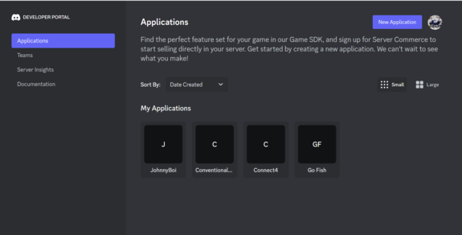
If it does not look like this then you must click the
applications button in the sidebar. You may be prompted to sign into discord. Once you're here you'll want to
click on the new application button in the top right. You will be greeted by this screen:
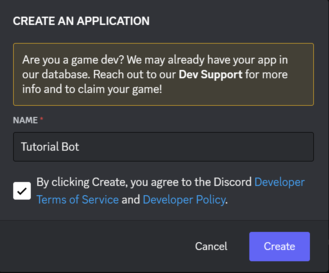
Here you can enter the name of the application, agree to the
terms and conditions, then press create. Now you should be on the bot home screen:

Here is where you can customize your bot and its permissions. You
can change the bot's description which will show up on its discord profile and you can edit its avatar.
However all we've made is an application not a bot. Next you will need to click on the bot button in the
sidebar:
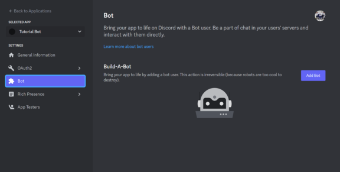
Now to make the bot you must click the add bot button.
Your screen should now show you the bot you just created!
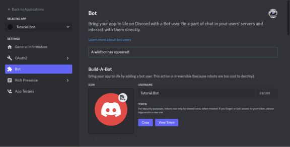
Bots have
a lot of customization options. We won't bother with most of them but feel free to research them on your
own. If the bot is only for your own server and you're making the code yourself, it's good enough to set the
administrator permission which lets your bot have all permissions. We will do this later when we add the bot
to our server.
Since we will be making use of the discord API let's take a look at what an API actually is. API stands for application programming interface and is what allows two programs to interact with each other through requests and responses. In our case making a discord bot without one would be almost impossible as discord is a seperate application that does not give us access to its code. Using the API we are able to tell discord what we want to happen, and then discord will execute it without us knowing the exact specifics of how it did it. This is extremely helpful for us as we can ignore any networking or other complications and just let discord handle it.
Let's start off with interactions. An interaction is an object of type discord.Interaction sent to us
whenever someone interacts with our bot. Using this interaction we can run different functions and respond
to the user. Slash commands are a way for users to interact with our bot. When we add slash commands to our
bot it makes them visible to users and allows them to use them in servers our bot is in. Here is an example
of what slash commands look like to the user:
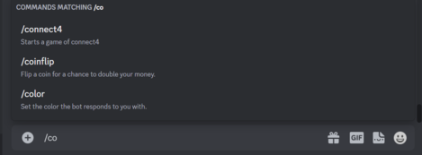
As you can
see, once we start typing with a '/' in front of our text discord will let us see any matching commands
from either discord itself or bots in the server. If the command requires arguments from the user those will
also show up there and make the user input them. These slash commands will then trigger an attached function
and will pass the interaction as an argument to that function.
Now it's time to make our first bot. We will make a simple bot with one command: "/hi". When this command is
used the bot will reply with a message such as "Hi {user}" where {user} is the person's username. To do this
you will first need a python compiler or IDE. If you don't have a preferred one you can download the official
python one here. Next you will have to install
the library discord.py. I'll include instructions on how to do it here
Now open up a new project and get started.
First go back to this page:
Now click on copy token. If there's no
copy token button, click on reset token and copy the new one. Next add it to your project. I like to put mine
in a text file called "token.txt" but you could also just put it in a variable called token. If you're using
replit you might add it as a secret. Next in your main file import discord. Then either read your token from
the file into the token variable (or just paste your token into the variable):
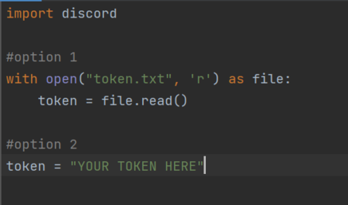
The next step is to add our command tree which discord uses for slash commands.
To do this we will need to import app_commands from discord. Under import discord write "from discord import
app_commands". Now discord already has a client class which allows us to initialize our bot, but we want to add
some functionality. So we will create a class called aClient which inherits from discord.Client. Inside this
class we will make a constructor which calls the parent constructor, and then sets its synced attribute to false.
Then we will create one more method for our class which syncs the command tree with discord when we run our bot:
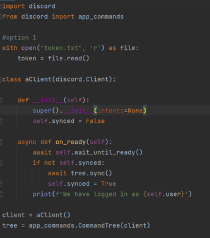
Below the class we create an instance which will be our
client and we then add the command tree to the client. Next we will create a command and add it to the command tree.
We do this by putting the tree.command decorator over an asynchronous function which will be the callback
function. In our case it will look like this:
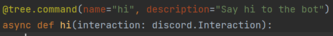
Now we have
to program what will happen when this command is called. You will notice the function accepts an interaction
as the only argument. This interaction has a ton of useful information for us such as the user. We will now
get the user and the return a response saying hi back to them:
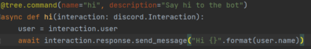
You'll notice we call the interaction response with the await key word. This is because it is a coroutine
and in python that is how you start one. All that's left is to put the command to run the client at the
bottom of the script. The finished script looks like this:
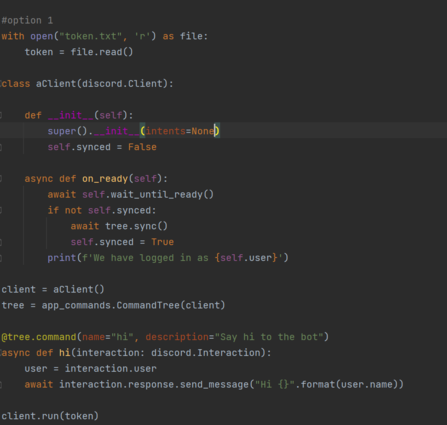
Congrats! You made a discord bot! To learn how to add it to your server go to
this link. Then try it out for yourself:
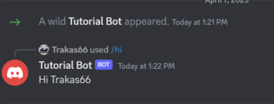